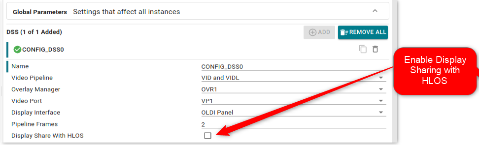
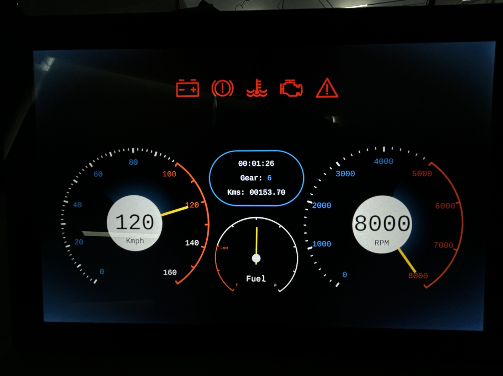

|
AM62Px MCU+ SDK
12.00.00
|
|
|
AM62Px MCU+ SDK
12.00.00
|
|
Display subsystem supports sharing of display between multiple hosts as it provides separate register space (common* region) for each host to programming display controller and also an unique interrupt line for each host. HLOS like Linux owns one or more of the video planes with video port (along with corresponding overlay manager) associated with these planes being owned and controlled by a remote core.
This example shares the DSS with high level OS like linux. The example uses one DSS pipeline (VIDL) and keeps the other pipeline for HLOS (VID).
The example uses DSS0 instance with VIDL pipeline, OVR1 overlay and VP1 videoport. The overlay manager is configured with Zorder 1 for VID pipeline and Zorder 2 for VIDL pipeline. The example acts as master for controlling DSS and expects linux to use VID pipeline. The VID and VIDL pipeline are overlayed together as per mentioned zorder above.
The Display sharing feature can be enabled by using below shown sysconfig option.

The example integrates early splash of image along with SBL on OSPI bootmedia, Device Manager and Interprocessor communication functionality. The bootloader IPC and Display run on separate tasks. The Display task displays a splash image with alpha blending and finally switches to display sharing task, where it ping pongs tell tale frames. The SBL stage 2 thread boots all the cores along with HLOS like Linux. Refer SBL Booting Linux From OSPI for boot flow sequence.
The example configures OLDI LVDS panel for Video Port 1. Please refer SK-LCD1 for panel details. The Video port timinng parameters are configured with respect to SK-LCD1. Timing parameters can be configured using sysconfig option.
The example implements a firewall function to configure firewall for DSS register regions used by the driver to ensure display-sharing functionality. This provides access for read, write, cache, and debug DSS register regions for the core running the DSS driver in RTOS context and provides only read access to the application core running HLOS like Linux. The example also configures a firewall for frame buffer memory region used in RTOS context for display sharing. This provides read, write, cache, and debug access to the DSS peripheral and core running the DSS driver in the RTOS context. This blocks access from all other entities in SoC from accessing the frame buffer memory region.
| Parameter | Value |
|---|---|
| CPU + OS | wkup-r5fss0-0 freertos |
| Toolchain | ti-arm-clang |
| Board | am62px-sk |
| Example folder | examples/drivers/dss/dss_display_share |
${SDK_INSTALL_PATH}/tools/boot/sbl_prebuilt/am62px-sk/default_sbl_ospi_linux_hs_fs_splash_screen.cfg
default_sbl_ospi_linux_hs_fs_splash_screen.cfg shown above.C:/ti/mcu_plus_sdk and this example and IPC application is built using makefiles, and Linux Appimage is already created, in Windows, cd C:/ti/mcu_plus_sdk/tools/boot
python uart_uniflash.py -p COM13 --cfg=C:/ti/mcu_plus_sdk/tools/boot/sbl_prebuilt/am62px-sk/default_sbl_ospi_linux_hs_fs_splash_screen.cfg
~/ti/mcu_plus_sdk cd ~/ti/mcu_plus_sdk python uart_uniflash.py -p /dev/ttyUSB0 --cfg=~/ti/mcu_plus_sdk/tools/boot/sbl_prebuilt/am62px-sk/default_sbl_ospi_linux_hs_fs_splash_screen.cfg
Display Output

 1.8.20
1.8.20